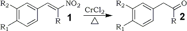

Abstract
α,β-Unsaturated nitroalkenes are readily reduced by chromium(II) chloride to the corresponding carbonyl compounds in good yields.
In continuation of our studies on the reduction of conjugated nitroalkenes to useful synthetic precursors such as nitroalkanes1, N-substituted hydroxylamines2, amines3, ketones4, chromenes5, α-alkoxy and α-alkylthio oximes6, and ketones7, we became interested in the synthesis of α-hydroxy oximes. An examination of the literature revealed that chromium(II) chloride reduction of steroidal nitroolefins afford α-hydroxy oxime derivatives8. A recent report9 on an unusual reduction of 3-nitroflavenes to flavonols by chromium(II) chloride also presumably proceeds via an α-hydroxy oxime intermediate. We decided to explore the use of chromium(II) chloride in the reduction of β-nitrostyrene derivatives. However, when the reductions were carried out as described in the literature8-11, the main reaction products were the corresponding carbonyl compounds with trace amounts of α-hydroxyketones12; no oxime derivatives were detected13 in contrast to earlier studies8,11.
|  |
|
Although transformations of nitroparaffins or their salts to carbonyl compounds (the Nef reaction)14 have been investigated extensively15, the readily accessible conjugated nitroalkenes have received little attention16-18. The present study may stimulate the use of low-valent transition metal species in the reduction of conjugated nitroalkenes analogous to their applications in the reduction of the corresponding nitroalkanes15c,15d.
Experimental
Table I.
Carbonyl Compounds from Nitroalkenes
via Chromium(II) Chloride Reduction
Nitroalkenea |
Productb |
Yieldc |
Lit. Refs. |
1a | 2a |
80% | |
1b | 2b |
81% | |
1c | 2c |
79% | |
1d | 2d |
78% | |
3 | 4 |
72% | |
5 | 6 |
52% |
- Prepared by the published procedure2.
- All products exhibited physical and
spectral characteristics in accordance
with the assigned structures. - Isolated and unoptimized yields.
The following procedure is representative:
Chromium(II) chloride [Alfa] (20 mmol, 2.46 g) was placed in a nitrogen-flushed flask equipped with septum inlet and magnetic stirring bar. Aqueous hydrochloric acid (3%, 30 mL) was injected into the flask followed by the slow addition of the β-nitrostyrene derivative (2 mmol, in 20 mL THF) at room temperature. A moderately exothermic reaction ensued. The mixture was refluxed for 4 hrs. and, after cooling, saturated with sodium chloride. The product was extracted into ether (3x30 mL) and worked up in the usual manner. The crude carbonyl compound was purified using a silica gel column (ether/petroleum ether). The results are summarized in Table I.